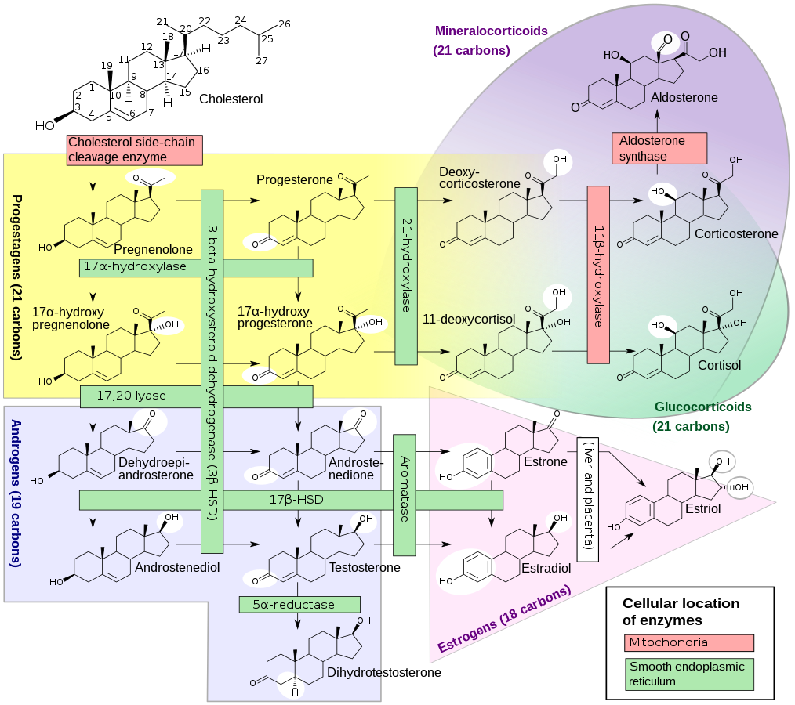

Enclomiphene Citrate: Pure Trans-Isomer SERM, Endogenous Steroidogenesis & The Exogenous Replacement Branch
Pillar: Endocrine Architecture & Steroidogenesis
Conviction Tier: CORE BET (Endogenous Optimization Baseline) / OPTIONAL PIVOT (TRT + HCG + GG Adjunct Branch)
Evidence Grade: E2 (Human Endocrine RCTs & Steroidogenic Enzymology)
Stance: Contrarian (Microdose off-label SERM + Geranylgeraniol StAR amplification to maintain youthful endogenous T/LH without HPTA shutdown; conditional TRT+HCG branch with strict rheology & ferritin guardrails)
Estimated Monthly Cost: $25 -- $40 / month (Optimization) | $110 -- $220 / month (TRT + HCG Branch)
Primary Target Hallmark: Altered Intercellular Communication & Loss of Proteostasis
1. Biophysical & Biochemical Mechanism
Selective estrogen receptor antagonist at the hypothalamic arcuate nucleus and pituitary gonadotrophs. Unlike racemic clomiphene citrate (which contains 38% cis-zuclomiphene with a >30-day half-life and pro-estrogenic/thrombotic toxicity), pure trans-enclomiphene (t_1/2 ~ 10 hr) selectively blocks ER-alpha-mediated negative feedback. This amplifies endogenous pulsatile Kisspeptin -> GnRH -> LH and FSH secretion, stimulating Leydig cell steroidogenesis to elevate total and free testosterone while preserving Sertoli cell inhibin-B and spermatogenesis.
2. The Empirical Evidence Base
Wiehle et al. (Fertil Steril 2014) and Kaminetsky et al. (BJU Int 2013): Restored serum total and free testosterone into the upper normal quartile (600–850 ng/dL) while maintaining normal sperm concentration and motility, in direct contrast to exogenous testosterone monotherapy which induced oligo-/azoospermia via gonadotropin suppression.
3. Honest Bayesian Probability & Expected Value
- P(Real Human Healthspan Extension): 85%
- Expected Value Justification: Preserving youthful androgenic and estrogenic signaling defends appendicular skeletal muscle mass, bone mineral density, cerebral glucose utilization, and endothelial eNOS sensitivity with minimal operational friction.
4. Physiological Failure Modes & Drug-Drug Interactions
- Hepatic IGF-1 Attenuation: First-pass hepatic
ER-alphaantagonism partially suppresses growth-hormone-mediated hepatic IGF-1 transcription by 15–25% at standard clinical doses (12.5–25 mg/day); microdosing (3.125–6.25 mgEOD/3x weekly) largely mitigates this effect. - DHCR24 & Desmosterolosis Guardrail: High or continuous daily doses of triphenylethylene SERMs can partially inhibit 24-dehydrocholesterol reductase (DHCR24), the terminal Bloch-pathway enzyme converting desmosterol to cholesterol. Pathological accumulation of desmosterol in the ocular lens risks cataractogenesis and blunts central neuroprotective estrogen signaling.
5. Precise Operational Protocol (Baseline Endogenous Optimization)
- Enclomiphene Citrate:
3.125 mg to 6.25 mgoral taken every other day (EOD) or 3x/week in the evening prior to the nocturnal GnRH/LH secretory window. - Geranylgeraniol (GG) Co-Administration:
150–300 mg/dayoral (taken with Meal 1 lipids) to upregulate Leydig cell StAR (Steroidogenic Acute Regulatory protein) and maximize the testosterone-to-LH conversion ratio. - Surveillance: Pair with quarterly blood panels (Total T via LC-MS/MS, Free T via Equilibrium Dialysis, Sensitive Estradiol via LC-MS/MS, LH, FSH, SHBG, Hematocrit, Ferritin, IGF-1, and Serum Desmosterol).
6. Objective Surveillance & Kill Criteria
- Biomarkers to Monitor: Hematocrit exceeding
52%, excessive estradiol elevation (>45 pg/mL) refractory to aromatase modulation, IGF-1 dropping>30%below baseline, or Serum Desmosterol rising>1.2–1.5 mg/L. - Kill / Pivot Rule: If biomarkers cross negative thresholds—or if pituitary LH rises
>7.0–8.0 IU/Lwhile Free Testosterone fails to respond (indicating primary Leydig cell uncoupling)—terminate Enclomiphene and evaluate the Alternative Exogenous Replacement Branch (Section 9).
7. Epistemic Frontier Questions (For Advanced AI Interrogation)
What is the exact receptor occupancy curve of trans-enclomiphene at human hypothalamic arcuate
ER-alphaversus hepatic hepatocyteER-alphaand lenticular DHCR24, and to what extent does exogenous Geranylgeraniol (GG) shift the Leydig LHCGR dose-response curve so that sub-saturating3.125 mgpulsed Enclomiphene achieves maximal intratesticular testosterone synthesis?
8. Explication of Geranylgeraniol (GG): The Master Isoprenoid Force Multiplier
Whether operating on the Baseline Endogenous Optimization path (Enclomiphene + SHBG Displacement + pulsed AC-262) or the Alternative Exogenous TRT + HCG Branch, Geranylgeraniol (150–300 mg/day trans-GG extracted from Bixa orellana annatto) is a non-negotiable molecular linchpin across four distinct biochemical axes:
8.1 Direct Amplification of Leydig Cell Steroidogenesis (cAMP/PKA -> StAR)
The rate-limiting step in all mammalian steroidogenesis is not circulating cholesterol availability, nor is it downstream CYP17A1 / 17beta-HSD enzymatic capacity—it is the physical translocation of free cholesterol across the aqueous intermembrane space from the outer mitochondrial membrane (OMM) to the inner mitochondrial membrane (IMM) where CYP11A1 (cholesterol side-chain cleavage enzyme) resides to synthesize pregnenolone.
- Mechanism: Ho et al. (Biosci Biotechnol Biochem 2016; J Clin Biochem Nutr 2018) demonstrated that Geranylgeraniol (and its intracellular phosphorylated derivative geranylgeranyl pyrophosphate, GGPP) directly activates Leydig cell adenylate cyclase -> cAMP -> Protein Kinase A (PKA) signaling.
- StAR Transcriptional & Phosphorylation Surge: PKA phosphorylates transcription factors (SF-1, CREB, GATA-4) to upregulate STAR mRNA expression while directly phosphorylating nascent StAR protein at Ser195, increasing its cholesterol-shuttle efficiency across the mitochondrial contact sites by 2- to 3-fold.
- Stoichiometric Payoff: Under Enclomiphene, GG ensures that modest physiological LH pulses produce maximal intratesticular pregnenolone and testosterone without requiring high SERM doses. Under TRT + HCG, GG sensitizes the Leydig apparatus so that ultra-low-dose HCG (
250 IU3x/week) sustains full intratesticular steroidogenesis without requiring high HCG doses (500–1,000 IU) that desensitize the LH receptor (LHCGR) and spike intratesticular aromatase.
8.2 Small GTPase Prenylation (RhoA/Rac1/Cdc42) & Sarcolemmal YAP/TAZ Mechanotransduction
In skeletal muscle, androgen receptor (AR) binding is only half of the hypertrophic equation; mechanical tension must be transduced from the extracellular matrix across the sarcolemma to the nucleus.
- Obligatory Lipid Anchor: Endogenous GGPP (synthesized from oral GG via GGPPS1) is the obligatory 20-carbon isoprenoid donor used by Geranylgeranyltransferase-I (GGTase-I) to covalently attach a hydrophobic lipid anchor to the C-terminal CAAX box of Rho-family small GTPases (RhoA, Rac1, Cdc42) and Rab/Rap vesicular trafficking proteins.
- The RhoA -> ROCK -> YAP/TAZ Cascade: Unprenylated RhoA remains trapped and inactive in the cytosol. Once geranylgeranylated, RhoA embeds into the inner leaflet of the sarcolemma. During high-force eccentric/concentric loading (Module 38 BMT), membrane-bound RhoA activates ROCK (Rho-associated protein kinase) and Focal Adhesion Kinase (FAK), driving F-actin stress fiber polymerization. This mechanical tension strips inhibitory phosphorylation from YAP and TAZ, driving their nuclear translocation where they form a transcriptional complex with TEAD and Ser81-phosphorylated Androgen Receptors to maximize myofibrillar protein synthesis.
8.3 Ubiquitin-Proteasome Atrogene Suppression (Atrogin-1 & MuRF1)
Age-related and statin/bempedoic-induced myopathy is driven by depletion of intramuscular GGPP. When muscle GGPP falls, unprenylated Rap1/RhoA triggers FOXO1/3a nuclear dephosphorylation, which transcribes the muscle-specific E3 ubiquitin ligases Atrogin-1 (FBXO32) and MuRF1 (TRIM63)—targeting myosin heavy chains for proteasomal destruction. Oral GG (150–300 mg/day) restores intramuscular GGPP pools, directly suppressing FBXO32 and TRIM63 transcription and preserving fast-twitch (Type IIa/IIx) glycolytic fibers during caloric restriction or FMD cycles.
8.4 Endogenous Coenzyme Q10 (Ubiquinone) & Menaquinone-4 (MK-4) Biosynthesis
- CoQ10 Isoprenoid Tail: The decaprenyl (10-isoprene unit) hydrophobic tail of human Coenzyme Q10—which anchors ubiquinone inside the inner mitochondrial membrane to shuttle electrons from Complex I/II to Complex III—is polymerized directly from GGPP and farnesyl pyrophosphate (FPP) via COQ2.
- UBIAD1 Conversion to MK-4: Oral Vitamin K1/K2 is cleaved to menadione during intestinal absorption; inside vascular smooth muscle cells, brain astrocytes, and Leydig cells, the prenyltransferase UBIAD1 uses GGPP as the exact 4-isoprene side-chain substrate to synthesize tissue-resident Vitamin K2 (Menaquinone-4, MK-4). In the testes, MK-4 directly activates Protein Kinase A and safeguards CYP11A1 against lipid peroxidation.
9. Alternative Architectural Branch: Exogenous Testosterone Replacement (TRT) + Mandatory Adjuncts
CLINICAL & ARCHITECTURAL DISCLAIMER: SEXUAL DIMORPHISM & OPTIONAL MALE PIVOT — (1) Female Perimenopause & Menopause (Replacement is Non-Negotiable): Female gonadal aging is driven by the programmed, irreversible exhaustion of a finite ovarian primordial follicle pool. Because granulosa and theca cells are depleted while pituitary LH/FSH are already maximally elevated (>30–100 IU/L), SERMs or endogenous secretagogues have zero functional substrate to stimulate. For women entering perimenopause/menopause, bioidentical hormone replacement therapy (BHRT)—specifically transdermal 17beta-estradiol (bypassing hepatic first-pass clotting factor synthesis), oral micronized progesterone (100–200 mg QHS for endometrial protection and hepatic conversion to neuroprotective/sedative allopregnanolone at GABA-A receptors), and physiological transdermal testosterone—is biologically non-negotiable to prevent endothelial eNOS Ser1177 collapse, rapid trabecular bone loss, cerebral glucose hypometabolism, and urogenital atrophy. (2) Male Andropause (Optimization vs. Replacement Trade-Off): In men, Leydig cell StAR and CYP11A1 machinery remain responsive to LH well into late life, making Endogenous Optimization (Sections 1–8) the preferred first-line strategy in the Kenaley v5.0 Protocol. The Exogenous TRT + Adjunct Branch detailed below is an optional alternative clinical specification to be deployed only under physician supervision if primary Leydig uncoupling, intolerable SERM desmosterol elevation, or specific quality-of-life/anabolic trade-offs warrant full HPTA replacement. Never execute exogenous testosterone as unbuffered monotherapy.
9.1 Why "Naked" TRT Fails Longevity Benchmarks (The Mandatory Adjunct Rule)
Administering exogenous testosterone alone clamps hypothalamic Kisspeptin/GnRH and drives pituitary LH and FSH to ~0.0 IU/L. Without mandatory adjunct management, exogenous T monotherapy creates two severe physiological failure modes:
- Shutdown of Upstream Delta-5 Neurosteroidogenesis & Gonadal Atrophy: When LH vanishes, Leydig mitochondrial StAR and CYP11A1 arrest. This stops not only testicular testosterone, but the entire upstream steroid cascade (Cholesterol -> Pregnenolone -> Progesterone -> Allopregnanolone & DHEA), causing 30–50% testicular atrophy, azoospermia, and central neurosteroid depletion (impaired slow-wave sleep and blunted
GABA-Atone). - Hepcidin Suppression, Secondary Erythrocytosis & The Phlebotomy-Ferritin Trap: Exogenous T stimulates renal EPO and potently suppresses hepatic hepcidin, opening ferroportin channels to drive aggressive erythropoiesis. When Hematocrit exceeds
52–54%, whole-blood viscosity rises non-linearly, increasing endothelial shear damage and thrombotic risk. However, indiscriminate prophylactic phlebotomy (450–500 mLwhole blood every 6–8 weeks) strips200–250 mgof elemental iron per draw. Over-phlebotomizing on TRT rapidly crashes serum Ferritin<25–30 ng/mL, which starves mitochondrial Complex I–IVFe-Sclusters, impairsFe2+-dependent TET1–3 DNA demethylation (Module 23), and produces microcytic, rigid red blood cells (high RDW) that paradoxically worsen microvascular viscosity.
9.2 Cost/Benefit Comparison: Endogenous Optimization vs. TRT + Adjuncts
| Evaluation Vector | Path A: Endogenous Optimization (Current v5.0 Baseline: Enclomiphene + SHBG Stack + GG + Pulsed AC-262) | Path B: Exogenous Replacement + Adjuncts (Optional Branch: Micro-Daily/EOD TRT + HCG + GG + Rheology Control) |
|---|---|---|
| Androgen Kinetics & Ceiling | Circadian & Pulsatile: Preserves natural early-morning GnRH/LH/T peak (750–1,050 ng/dL) and nocturnal trough. Paired with 8–12 wk AC-262 cycles (INT-43), achieves 14:1 myotrophic selectivity without prostate/scalp DHT amplification. |
Tonic & Unconditional: Locks Total T (800–1,000 ng/dL) and Free T (150–200 pg/mL) 24/7/365 regardless of caloric deficit, sleep disruption, or extreme athletic volume, at the cost of flattening circadian androgen troughs. |
| Sterol Biophysics & IGF-1 | Requires monitoring serum Desmosterol (due to SERM partial inhibition of DHCR24) and mild 15–20% hepatic IGF-1 reduction. | Zero DHCR24 inhibition (clean sterol panel) and preserves/mildly elevates hepatic IGF-1 secretion without central ER-alpha blockade. |
| Hemorheology & Iron Homeostasis | Clean Rheology: Pulsatile endogenous T rarely pushes Hematocrit >49–50%; zero phlebotomy burden; Ferritin remains easily locked at 40–65 ng/mL. |
High Surveillance Overhead: Requires daily/EOD micro-dosing to blunt EPO spikes and strict coordination between Donor Plasmapheresis (INT-15) and Whole-Blood Phlebotomy to keep Hct <51.5% without crashing Ferritin <40 ng/mL. |
| Fertility & Upstream Steroids | 100% Native Preservation: Both pituitary LH and FSH are elevated; Sertoli spermatogenesis and Leydig Delta-5 steroidogenesis operate at peak capacity. |
Requires Concomitant HCG + Pregnenolone: Low-dose HCG (250 IU 3x/wk) + GG preserves intratesticular T and ~85–90% spermatogenesis, while pituitary FSH remains suppressed unless rFSH/hMG is added. |
| Operational & Travel Friction | Minimal ($25–$45/mo): Oral tablets/capsules only; zero DEA Schedule III restrictions, zero needles, zero 2–8 deg C peptide cold-chain required. |
Moderate-to-High ($110–$220/mo): DEA Schedule III controlled substance; reconstituted HCG requires refrigeration; 5–7 SubQ micro-injections per week. |
9.3 The "Kenaley-Grade" TRT + HCG + Rheology Execution Protocol (If Activated)
If objective pivot criteria are met (e.g., Desmosterol >1.5 mg/L on low-dose Enclomiphene, or primary Leydig uncoupling where LH >8 IU/L with Free T <100 pg/mL), execute the replacement branch as follows:
- Stack Consolidation: Immediately discontinue Enclomiphene (
INT-17) and Tongkat Ali (INT-21). Retain Nettle Root (500 mg) for prostatic DHT/SHBG buffering and Geranylgeraniol (150–300 mg/day) for StAR/YAP-TAZ support. - Micro-Daily or EOD SubQ/Shallow-IM Testosterone: Administer
15–18 mgdaily (or30–35 mgEOD, totaling105–125 mg/week) of Testosterone Cypionate or Enanthate in MCT/grapeseed carrier oil via 30G5/16-inchinsulin syringe. Eliminating bolusC_maxpeaks prevents spillover aromatization (keeping sensitiveE2at25–35 pg/mLwithout requiringINT-18 Exemestane) and reduces EPO/hepcidin erythrocytosis by>60%. - Concomitant Low-Dose HCG + GG + Pregnenolone: Inject HCG
250 IUSubQ on Mon / Wed / Fri (750 IU/week). Co-administration with Geranylgeraniol (150–300 mg/day) amplifies LeydigcAMP/PKA -> StARcholesterol transport so250 IUHCG maintains 100% testicular volume and intratesticular steroidogenesis without LHCGR desensitization or refractory intratesticular estrogen spikes. Add10–25 mgmicronized Pregnenolone at bedtime to guarantee central allopregnanolone slow-wave sleep architecture. - The Dual-Threshold Prophylactic Phlebotomy vs. Plasmapheresis Rule: Maintain endothelial shear and RBC membrane deformability via Microdose Tadalafil (
INT-10), Aged Garlic SAC + Rhamnan Sulfate (INT-11), and Krill/Omega-3 (INT-12). Execute Commercial Donor Plasmapheresis (INT-15) as the monthly default, which removes800 mLof aged plasma SASP proteins and lowers plasma viscosity while returning 100% of red blood cells (preserving iron/ferritin). Substitute a450 mLProphylactic Whole-Blood Phlebotomy (every 12–16 weeks) ONLY when Hematocrit>51.5%AND Serum Ferritin>45 ng/mL. If Hematocrit exceeds51.5%while Ferritin is<35–40 ng/mL, do not phlebotomize (to avoid TET1–3 and mitochondrialFe-Sstarvation); instead, reduce weekly Testosterone dose by 15%, verify nocturnal nasal patency/sleep apnea (INT-31), and maintain hydration with nocturnal Sodium Bicarbonate (Module 37).
v5.0 Kinetic & Stoichiometric Optimization Patch
- Pulsed Dosing & Desmosterolosis Guardrail: Avoid daily chronic hypothalamic
ER-alphablockade (which antagonizes central neuroprotective estrogen signaling). High-dose SERMs can inhibit 24-dehydrocholesterol reductase (DHCR24), the terminal enzyme reducing desmosterol to cholesterol, thereby abnormally spiking desmosterol and creating a risk of cataractogenic desmosterolosis. Pulse 3.125–6.25 mg EOD or 3x/week paired with 150–300 mg/day Geranylgeraniol (GG) to maximize Leydig StAR responsiveness while ensuring desmosterol levels do not accumulate pathologically on sterol balance panels.
Spidered Biological & Protocol Visualizations
